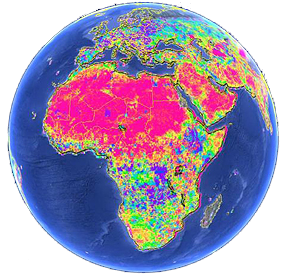
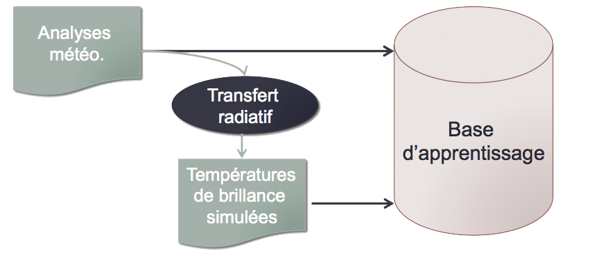
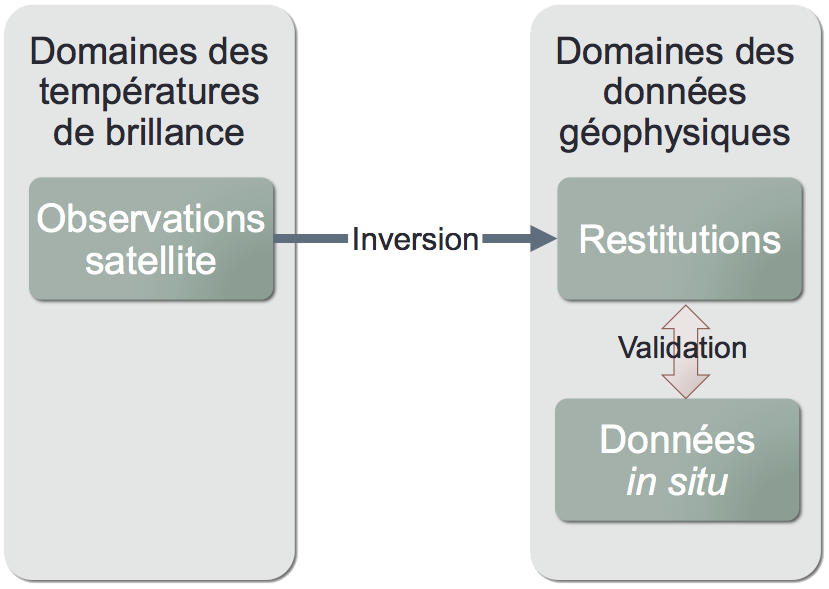
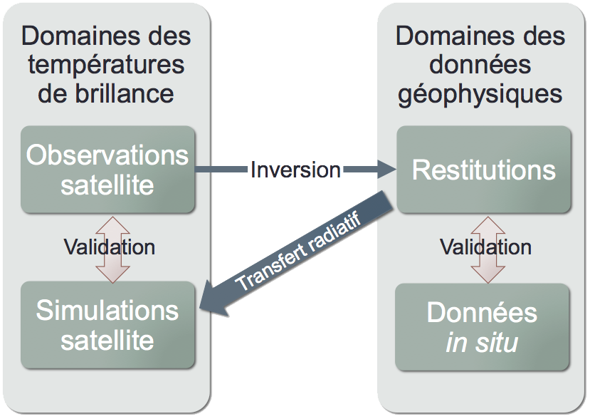
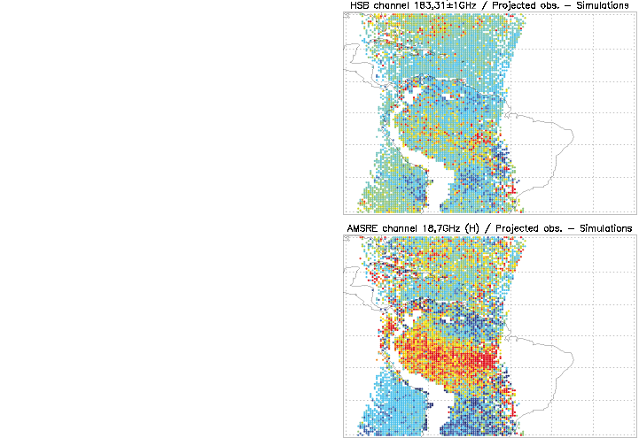
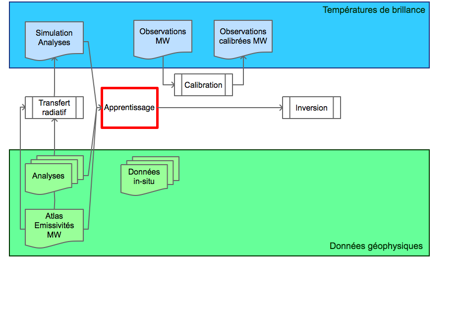
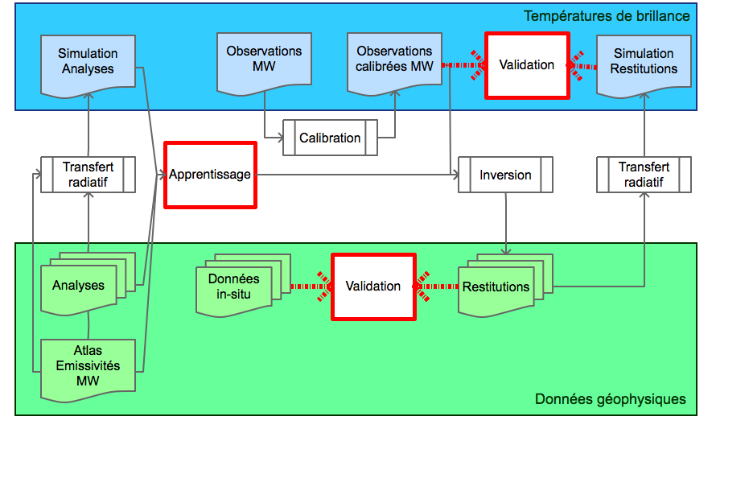
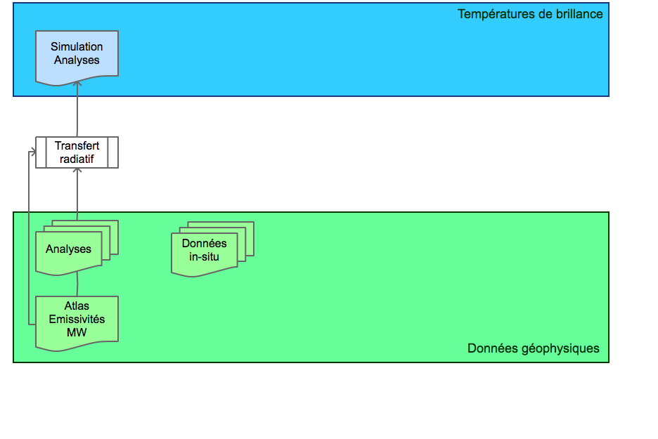
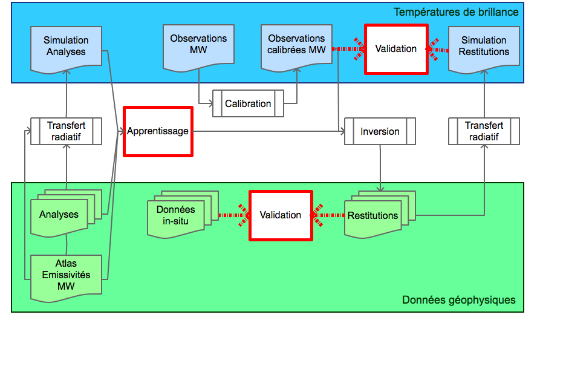
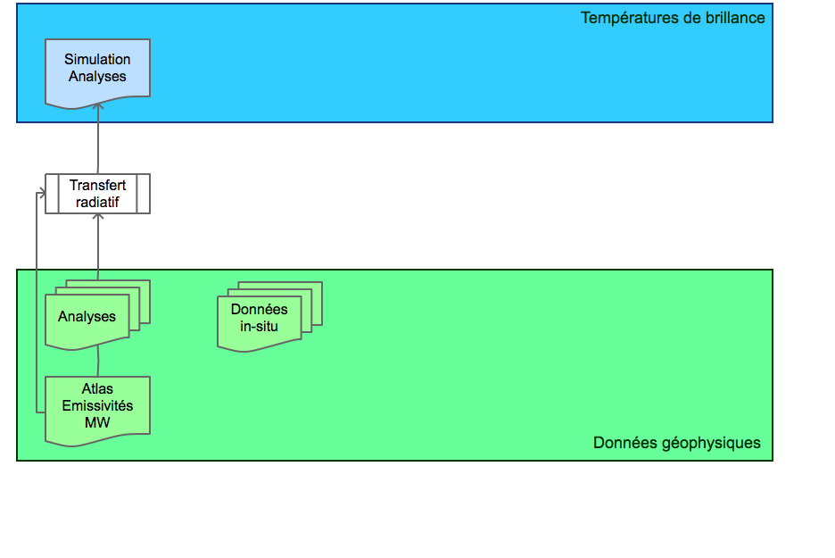

Frédéric Bernardo
07 Juin 2013
Télédétection satellite micro-onde
de variables atmosphériques et de surface
Thèse encadrée par Filipe Aires et Catherine Prigent
École doctorale des Sciences de l'Environnement
Introduction
- État de l'art
Télédétection [teledetεksjɔ̃] (nom féminin) Technique d'acquisition à distance d'informations sur la surface terrestre, principalement fondée sur l'analyse d'images obtenues dans différentes gammes de longueurs d'onde à partir d'aéronefs ou de satellites. Larousse
- Micro-ondes
- Infrarouge
- Visible

- Nuage
- Albedo
- Nuages opaques
- De jour
- Profils T°, RH
- Surface
- Résolution spatiale
- Nuages opaques
- Profils T°, RH
- Surface
- Résolution spatiale
- Nuages transparents
Aujourd’hui, la télédétection MW
-
 Atmosphère
Atmosphère
- Température
- Vapeur d’eau
- Précipitations
-
 Surface océanique
Surface océanique
- Température
- Vent
- Glace de mer
- Salinité
-
Surface continentale
- humidité des sols
- caractérisation
de la neige
En situation claire et nuageuse
Rôle majeur dans la prédiction numérique du temps
- Restitution au dessus des continents difficile en basse altitude à cause de la contribution de la surface
- Évaluation des performances des restitutions limitée par les mesures in situ
1. La problématique
- Introduction à la problématique
Le rayonnement atmosphérique
dans le domaine MW
- Émission propre de la surface (terre ou océan)
- Émission des composants de l’atmosphère et des nuages

Équation du Transfert Radiatif
- L’émission de la surface vers le haut de l’atmosphère
- L’émission des composants de l’atmosphère vers le haut
- La réflexion par la surface du rayonnement émis par l’atmosphère vers le bas de l’atmosphère
Fonctions de poids d'un capteur MW
- Dépendent de :
- la fréquence
- l'altitude
- l'atmosphère
Le spectre électromagnétique
de l'atmosphère dans le domaine MW
- Bandes d’absorption
- Raies de l'O2 entre 50 et 60GHz
- Raies à 183.31GHz pour la vapeur d'eau
- ...
- Profils atmosphériques
- Des canaux fenêtres
- Propriétés de la surface
- Nuages
- Pluies
- Fréquences ↑ = Opacité ↑
- Méthodologie
Inversion de données satellites
- Problème direct
- Transfert radiatif (RTTOV)
- Équation physique
- Problème inverse
- Inversion analytique du transfert radiatif
- Méthode physique
- 1D-VAR
- Réseaux de neurones
- ...
Réseaux de neurones

- Nécessite un apprentissage
- Adapté à la fusion d’information pour exploiter la synergie multi-longueurs d’ondes
Base de données
- Analyses :
Issues des modèles d’assimilation et de prévision
- Décrit les variables géophysiques de la surface et de l’atmosphère

- Base d'apprentissage
Des paires cohérentes de température de brillance (entrées) et de données géophysiques (sorties)
Validation


- Le projet Megha-Tropiques
- Mission indo-française entre le Indian Space Research Organisation et le CNES
- Dédiée au cycle de l’eau et de l’énergie dans les Tropiques
- Faible inclinaison sur l’équateur (ceinture équatoriale)
- Haute répétitivité des mesures (jusqu’à 7 survols journaliers du même point) mais irrégulière
- 865 km d’altitude
- Fait partie de la constellation Global Precipitation Measurement (GPM)
Instrumentation
- ScaRaB
Flux radiatif au sommet de l’atmosphère dans les ondes courtes et les ondes longues - SAPHIR
Sondeur microondes dédié à la vapeur d’eau : 6 canaux dans la bande d’absorption de la vapeur d’eau à 183,31 GHz - MADRAS
Imageur microondes pour les précipitations : canaux à 18, 23, 37, 89 and 157 GHz, polarisations H et V
Saphir
- Sondage atmosphérique transversale pour la vapeur d’eau
- Résolution verticale inédite en MW
| Fréquence (GHz) | Bruit (K) | Largeur (MHz) |
| 183.31 ± 0.2 | 2.03 | 200 |
| 183.31 ± 1.1 | 1.53 | 350 |
| 183.31 ± 2.8 | 1.37 | 500 |
| 183.31 ± 4.2 | 1.25 | 700 |
| 183.31 ± 6.8 | 1.06 | 1200 |
| 183.31 ± 11 | 0.99 | 2000 |

Madras
- Imageur MW
- Balayage conique à 53°
- 10 km à 40 km de résolution

| Fréquence (GHz) | Bruit (K) | Objectifs | |
| 18.7 | V | 0.46 | Pluie sur la mer |
| H | 0.53 | ||
| 23.8 | V | 0.48 | Distribution de vapeur d'eau |
| 36.5 | V | 0.44 | Eau liquide dans les nuages, pluie sur la mer |
| H | 0.48 | ||
| 89 | V | 0.63 | Zones convectives de pluie |
| H | 0.58 | ||
| 157 | V | 1.75 | Détection de glace dans les nuages |
| H | 1.75 | ||

Réseaux de neurones


- Transfert radiatif : approximations, erreurs mineures...
- Observation : biais de l'instrument, déviation du satellite...

Comparaison avec les données simulées


- Écarts des TB Observées (gauche) et Calibrées (droite) avec les TB simulées via RTTOV pour AMSR-E et HSB sur Aqua à 183±1 GHz et 18.7 GHz H
- Échantillon de situations non précipitantes de 09/2002 et 01/2003 en coïncidence avec les données OPERA ECMWF.
- Écarts moyens des TB Calibrées (traits pleins) et Observées (tirets) avec les TB simulées via RTTOV sur les canaux AMSR-E et HSB sur Aqua
- Échantillon de situations non précipitantes de 09/2002 et 01/2003 en coïncidence avec les données OPERA ECMWF.

- Écarts moyens des profils d'humidité relative des radiosondages avec ceux des restitutions à partir de TB observées (tirets) et calibrées (traits pleins) issues de AMSR-E et HSB sur Aqua
- Échantillon de situations non précipitantes de 09/2002 et 01/2003 en coïncidence avec les données OPERA ECMWF.
An Innovative Calibration Method for the Inversion of Satellite Observations,
Aires, F. and Bernardo, F. and Brogniez, H. and Prigent, C., JAMC 2010
Aires, F. and Bernardo, F. and Brogniez, H. and Prigent, C., JAMC 2010
La surface continentale
- Au dessus des océans, Emissivité ≈ 0.5
- Au dessus des terres, Emissivité > 0.7
- Varie selon le type de surface
- Varie dans le temps
- Dépend de la fréquence et de la polarisation observée
- Sur la surface terrestre, l'utilisation des canaux fenêtres est souvent un problème
Prigent et al. 1997
Atlas d'émissivité
→ Création d’une base d’émissivité à partir des observations SSMI
- Mensuel
- Basé sur 12 ans d'observations
- Pour chaque canal SSMI
- 53º d'angle de incidence
- Avec matrice de covariance des erreurs
Exemple de climatologie d'émissivité à 85 GHz (H) pour SSMI
Prigent et al. 2006Interpolation des émissivités
- En fréquence, basées sur les canaux SSMI
- En angle d'incidence, en s'appuyant sur
- Des estimations à partir de AMSU-A
- Les modèles d'émissivités (Weng 2001)
- TELSEM, un outil intégré officiellement à RTTOV10
Validations
- AMSR-E & HSB (AQUA)
- AMSU-A/B (NOAA-18)
Écart-type entre TB observées et TB simulées
pour AMSUA et AMSUB sur les mois de 07/2002 et 01/2003.
TELSEM est comparé entre autre au modèle de Weng (2001)
A Tool to Estimate Land Surface Emissivities in the Microwaves (TELSEM) for use in numerical weather prediction schemes,
Aires, F., C. Prigent, F. Bernardo, C. Jimenez, R. Sounders, and P. Brunel, QJRMS 2011
Aires, F., C. Prigent, F. Bernardo, C. Jimenez, R. Sounders, and P. Brunel, QJRMS 2011
Produits de la chaine Saphir-Madras
En ciel clair ou nuageux :- Contenu en vapeur d'eau (TCWV)
- Profil de vapeur d'eau (WV) sur océan
- Profil de vapeur d'eau (WV) sur terre
- Vitesse des vents océaniques (WS)
- Température de la surface des terres (LST)
- Emissivités de surface des terres
Pour l'étude pre-launch :
- AMSR-E / HSB sur AQUA (le plus proche de MT)
- AMSU-A / MHS sur METOP
Étude de contenu en information
Erreur théorique de restitution du profil de vapeur d'eau
sur 6 niveaux
(en abscisse, l'erreur théorique en %age d'humidité relative)
Erreur théorique de restitution du profil de vapeur d'eau
sur 20 niveaux
Atmospheric water vapour retrieval from microwave instruments
Part I : Methodology,
Aires, F., F. Bernardo, C. Prigent, QJRMS 2012
Part I : Methodology,
Aires, F., F. Bernardo, C. Prigent, QJRMS 2012
La chaine Saphir-Madras
 



Restitution de la vapeur d’eau à partir d'observations réelles (Aqua)
Restitution de la vapeur d’eau à partir d'observations réelles (Aqua)
Validation de la restitution du profil de vapeur d’eau
Écart entre l’humidité relative des radiosondages et celles des restitutions sur terre, à partir des observations réelles AMSR-E/HSB
Capacité théorique de restitution du profil de vapeur d'eau par plusieurs sets d'instruments MW
(en abscisse, l'erreur théorique en %age d'humidité relative)
Validation dans l'espace des TB
 Écart entre les observations HSB/AMSR-E sur Aqua avec :
Écart entre les observations HSB/AMSR-E sur Aqua avec :
- les simulations de l'analyse (tirets)
Écart entre les observations HSB/AMSR-E sur Aqua avec :
- les simulations de l'analyse (tirets)
- les simulations des données restituées (trait plein)
Écart entre les observations HSB et AMSR-E sur Aqua avec :
- les simulations de l'analyse (tirets)
- les simulations des données restituées (trait plein)
- En ciel clair (noir) et nuageux (gris)
Atmospheric water vapour retrieval from microwave instruments - Part II : Evaluation for the Megha-Tropiques mission,
Bernardo, F., F. Aires, C. Prigent, QJRMS 2012
Bernardo, F., F. Aires, C. Prigent, QJRMS 2012
Le projet Microwat
- Le projet Microwat
Variabilité de la température de surface
Variabilité spatiale de la SST sur les mois de Janvier et Juillet de 2007 à 2010
Caractéristiques de l'imageur AMSR-E
| Fréquence (GHz) | Bruit (K) | Largeur (MHz) | Résolution spatial (km x km) | |
| 6.925 | V | 0.30 | 350 | 74 x 43 |
| H | ||||
| 10.65 | V | 0.60 | 100 | 51 x 30 |
| H | ||||
| 18.7 | V | 0.60 | 200 | 27 x 16 |
| H | ||||
| 23.8 | V | 0.60 | 400 | 31 x 18 |
| H | ||||
| 36.5 | V | 0.60 | 1000 | 14 x 8 |
| H | ||||
| 89 | V | 1.10 | 3000 | 6 x 4 |
| H | ||||
- SST : Sea Surface Temperature
- OWS : Oceanic Wind Speed
Étude de contenu en information
- SST : Sea Surface Temperature
- OWS : Oceanic Wind Speed
- RH : Relative Humidity
- 6.9 GHz V, 10.7GHz V et 18.7GHz V sont les plus sensibles
- À faible température, 6.9GHz V est indispensable pour la restitution
Jacobiens de SST pour les canaux de AMRS-E
à différentes températures de surface
- 6.9 GHz H, 10.7GHz H et 18.7GHz H sont les plus sensibles
- À faible température, 18.7GHz H est le plus efficace pour la vitesse du vent

Jacobiens de OWS pour les canaux de AMRS-E
à différentes vitesses du vent

Jacobiens de OWS pour les canaux de AMRS-E
à différentes vitesses du vent
En résumé :
- Les fréquences les plus sensibles à la SST :
6.9, 10.7 et 18.7 en polarisation V - Les fréquences les plus sensibles au vent :
6.9, 10.7 et 18.7 en polarisation H - À faible température, 6.9 GHz V est indispensable pour la restitution de la SST
- À faible température, 18.7 GHz H est le plus efficace pour la vitesse du vent
- Sensibilité à la vapeur d'eau faible à basse fréquence, sauf pour le 18.7 GHz
- Canaux à 6.9 GHz et 18.7 GHz en polarisation V et H
Erreur théorique de la
restitution avec AMSR-E
| Configuration | Biais (K) | RMS (K) |
| Tous les canaux | 0.00 | 0.43 |
| Sans les canaux à 6.9 GHz | -0.02 | 0.89 |
| Uniquement 6.9 et 18.7 GHz | 0.00 | 0.55 |
Erreurs théoriques de restitution de la SST du modèle d'inversion exploitant les observations AMSR-E
Erreurs théoriques de restitution de la SST en fonction de la SST selon différents modèles d'inversion (en noir),
et distribution des SST de l'analyse (en gris)
Comparaison avec
les données in situ
| Configuration | Biais (K) | RMS (K) |
| Tous les canaux | -0.02 | 0.67 |
| Sans les canaux à 6.9 GHz | -0.03 | 0.72 |
| Uniquement 6.9 et 18.7 GHz | 0.03 | 0.67 |
Écarts de SST entre les mesures des bouées et les restitutions du modèle d'inversion exploitant les observations AMSR-E
Concepts instrumentals Microwat
| Fréquence (GHz) | Bruit (K) | Largeur (MHz) | Résolution Spatiale (km) | |
| Antenne réelle | 6.9 (V+H) | 0.12 | 825 | 15 |
| 18.7 (V+H) | 0.26 | 200 | 15 | |
| Interféromètre 2D | 6.9 (V) | 3.86 | 825 | 15 |
| 18.7 (V+H) | 2.50 | 200 | 15 | |
| Interféromètre 1D | 6.9 (V+H) | 0.14 | 30 | 15 |
| 18.7 (V+H) | 0.37 | 80 | 15 |
| Erreur théorique SST RMS (K) | |
| 0.32 | |
| 1.27 | |
| 0.38 | |
Méthodes d'inversion
- : Atlas mensuel (issue d'une climatologie sur plusieurs années)
- : Inversion linéaire (interpolation optimale)
- Réseaux de neurones
Performances théoriques des modèles d'inversion
...Restitution de la SST
Températures de surface de l'océan dans l'Océan Indien issues de
l'inversion des observations de AMSR-E (haut)
et des analyses ECMWF (bas) le 01/09/2002
Conclusions
- Conclusion
- Restitution simultanée de propriétés de surface et de l’atmosphère
- Un modèle de calibration des observations spatiales
- Un modèle d'inversion adapté capable de :
- fusionner l'information de plusieurs capteurs
- exploiter des données auxiliaires
- Définition d'un nouvel instrument
- Développement des algorithmes scientifiques de restitutions
- Exploitation opérationnelle et la validation des produits restitués
Perspectives
Une climatologie multi-instrumentale de la vapeur d’eau- Sur terre et océan
- En ciel clair et nuageux
Amélioration de l'atlas d'émissivité
- Utilisation d'autres instruments micro-ondes
Précipitations (GPM, ...)
Hydrologie continentale (SWOT, ...)
Hydrologie continentale (SWOT, ...)
Synergie d'instruments micro-ondes et infrarouge
- MetOp-SG